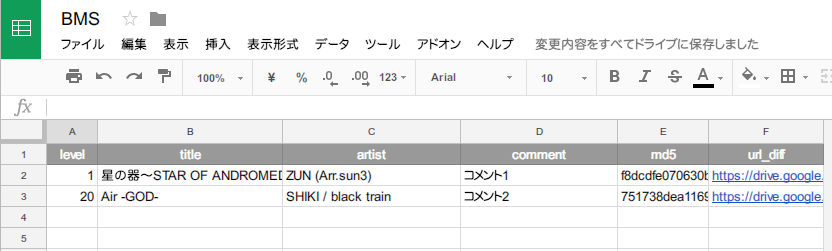
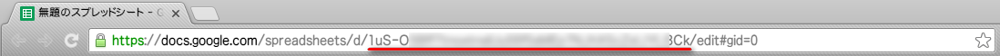
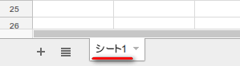
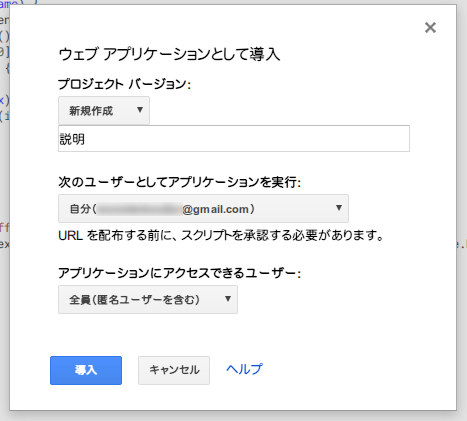
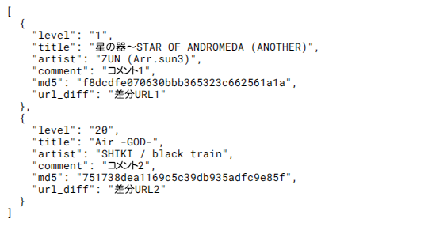

スプレッドシートを使って難易度表を管理する
できること
GAS（Google Apps Script）を使ってスプレッドシートのデータをJSONで取得する
↓こんなシートを書いたら
↓これが取得できるURLを作れる
[
{
"level": "1",
"title": "星の器～STAR OF ANDROMEDA (ANOTHER)",
"artist": "ZUN (Arr.sun3)",
"comment": "コメント1",
"md5": "f8dcdfe070630bbb365323c662561a1a",
"url_diff": "https://drive.google.com/..."
},
{
"level": "20",
"title": "Air -GOD-",
"artist": "SHIKI / black train",
"comment": "コメント2",
"md5": "751738dea1169c5c39db935adfc9e85f",
"url_diff": "https://drive.google.com/..."
}
]
手順
- スプレッドシートを作成する
- スクリプトを作成する
- ウェブアプリケーションとして公開する
スプレッドシートを作成する
スプレッドシートを作成し、1行目にjsonのオブジェクトキーを入力する。次期難易度表フォーマットについては第二難易度表のページを参照してください。
2行目以降にデータを入力していく。書式等は好きにいじってOK。関数の使用も可能。
シートのIDとシート名をメモする。シートのURLが
https://docs.google.com/spreadsheets/d/xxxxxxxxxxxxxxxxxxxxxxxxxxxxxxxxxxxxxxxxxxxx/edit#gid=0000000000
なら"xxxxxxxxxxxxxxxxxxxxxxxxxxxxxxxxxxxxxxxxxxxx"がID。
シート名はシート下部のタブの名前（デフォルトはシート1）
 スクリプトを作成する
メニューの ツール > スクリプトエディタ... からスクリプトエディタを開く。
下記のコードを入力。
function getSheetAsObj(id, sheet_name) {
var sheet = SpreadsheetApp.openById(id).getSheetByName(sheet_name);
var rows = sheet.getDataRange().getValues();
var keys = rows.splice(0, 1)[0];
return rows.map(function(row) {
var obj = {}
row.map(function(item, index) {
obj[keys[index]] = String(item);
});
return obj;
});
}
function doGet() {
var obj = getSheetAsObj('xxxxxxxxxxxxxxxxxxxxxxxxxxxxxxxxxxxxxxxxxxxx', 'シート1');
return ContentService.createTextOutput(JSON.stringify(obj, null, 2)).setMimeType(ContentService.MimeType.JSON);
}
('xxxxxxxxxxxxxxxxxxxxxxxxxxxxxxxxxxxxxxxxxxxx', 'シート1') の部分をさっきメモしたシートIDとシート名に変更
プロジェクトを適当な前で保存する
ウェブアプリケーションとして公開する
メニューの 公開 > ウェブアプリケーションとして導入... を選びウェブアプリケーションとして公開する
「プロジェクト バージョン」 を 「新規作成」 に設定 説明欄は適当に入力
「次のユーザーとしてアプリケーションを実行」 を 「自分」 に設定
「アプリケーションにアクセスできるユーザー」 を 「全員（匿名ユーザーを含む）」 に設定
「導入」をクリックして公開。承認が必要になるので許可する。Googleの検閲がまだ通ってない場合、このアプリは確認されていませんと出ることがある。暫く時間を置き検閲が通るのを待つか、詳細から移動をクリックして移動する。
「現在のウェブアプリケーションのURL」にアクセスすると表のjson形式のデータが取得できる。ファイルがありませんと出る場合はスプレッドシートを一度開き直すと良い
難易度表として登録
難易度表のheader.jsonのdata_urlに、ウェブアプリケーションのURLを設定すればOK
難易度表のページは適当な鯖を借りるなどして作ってください
まとめ
シートの変更内容が即時jsonに反映されるのでjsonを作成する手間が省ける
スプレッドシートなので共同編集や応用も可能
javascriptの知識があれば、GASを用いた応用も可能
身内間程度の表の管理などには便利なのではないでしょうか
コードの詳細
- doGet(e)
- GETリクエストが送られた際に実行される関数。
- 返り値にHtmlOutputかTextOutputを設定。返した値が表示される。
- doPost(e)を用いればPOSTリクエストの処理も可能。
- 引数eでパラメーターの取得が可能。 例えば".../exec?table=aaa"とパラメーターをつけてアクセスすると、e.parameterには{"table": "aaa"}が入る。 １つのスプレッドシートから複数の難易度表を管理したいときに便利。
- 詳細はこちらhttps://developers.google.com/apps-script/guides/web
- SpreadsheetApp.openById(id).getSheetByName(sheet_name)
- スプレッドシートを取得する。
- openByIdでスプレッドシートを開き、getSheetByNameでシートを開く。
- ウェブアプリケーションとして実行するのでgetActiveSheet()等は使わずIDで指定している。
- sheet.getDataRange().getValues()
- getDataRangeでデータが存在するすべての範囲のRangeオブジェクトを返す。
- getValuesで範囲内のデータを二次元配列で取得。
- GASの詳しい詳細はこちらhttps://developers.google.com/apps-script/